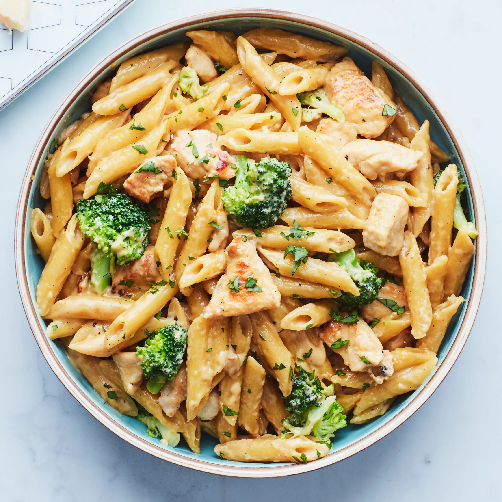

Pasta
Back to Main Page

Description
From creamy Alfredo to tangy marinara, pasta is a versatile and comforting dish for any occasion. Whether you're making a quick weeknight dinner or a gourmet Italian feast, our easy-to-follow recipes will help you cook the perfect pasta, complete with flavorful sauces and the best cooking tips.
Ingredients
- 200g pasta (spaghetti, penne, etc.)
- 1 liter water
- 1 teaspoon salt
- 1 tablespoon olive oil (optional)
- Pasta sauce of your choice
Instructions
- Boil Water: Fill a pot with water and bring it to a boil over high heat.
- Add Salt: Add salt to the boiling water to enhance flavor.
- Cook Pasta: Add the pasta and stir occasionally to prevent sticking. Cook according to the package instructions (usually 8-12 minutes).
- Check Doneness: Taste a piece to check if it’s cooked to your liking (firm but not hard – “al dente”).
- Drain: Use a colander to drain the pasta. You can save some pasta water to mix with the sauce if needed.
- Mix with Sauce: Add the pasta to a pan with your sauce and mix well.
- Serve & Enjoy! Optionally, top with cheese or herbs.